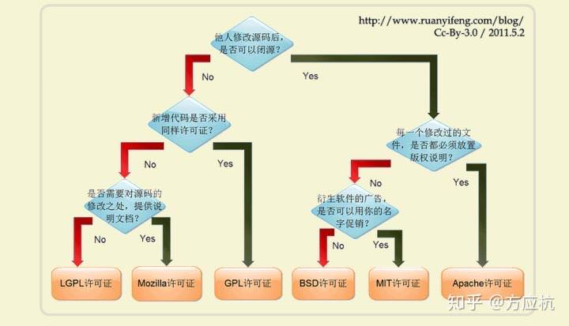

开源许可MIT等具体含义
这篇文章发布于 2020/01/30，归类于 计算机基础与开发工具
标签：
开源许可MIT等具体含义，开源许可licence含义
一般新建一个开源仓库时，需要确定开源协议。之前习惯是MIT，就是别人拿去干什么都可以。对于一些需要控制他人使用的就需要其他协议了。阮一峰博客里有一张图来解释很清晰明了

- 他人修改源码后是否可以闭源?
- 可以闭源，没一个修改过的文件是否都必须放置版权说明?
- 需要放置版权说明 Apache许可证
- 不需要放版权说明，衍生软件的广告是否可以使用你的名字促销?
- 可以用你的名字促销 MIT许可证
- 不可以用你的名字促销 BSD许可证
- 只能开源，那新增代码后是否采用同样的许可证(不能闭源)?
- 新增代码后也只能开源 GPL许可证
- 新增代码后可以闭源，需要对源码的修改之处提供说明文档吗？
- 需要对源码的修改之处提供说明文档 LGPL许可证
- 不需要提供说明文档 Mozilla许可证
- 可以闭源，没一个修改过的文件是否都必须放置版权说明?
结合实际情况，zuo11.com个人站点blog部分的开源可以使用 Apache许可证，如果是后面开源生成静态页面的程序，可以使用MIT协议